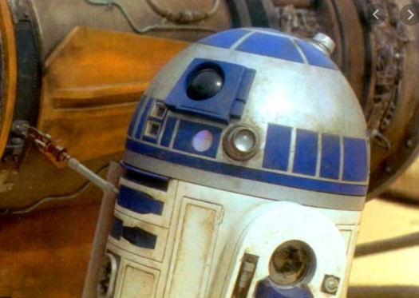

R2D2

R2-D2 or Artoo-Detoo is a fictional robot character in the Star Wars
franchise created by George Lucas. He has appeared in eleven of the twelve
theatrical Star Wars films to date.
At various points throughout the course of the films, R2, an astromech
droid, is a friend to C-3PO, Padmé Amidala, Anakin Skywalker, Leia Organa,
Luke Skywalker, and Obi-Wan Kenobi.
R2-D2 and his companion C-3PO are the only characters to appear in every
theatrical Star Wars film, with the exception of Solo: A Star Wars Story
(2018).